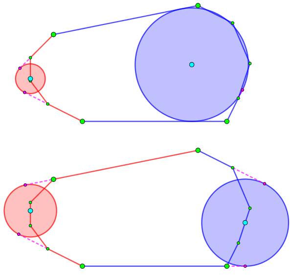

给定一个凸 $n$ 边形，你需要找到最小的 $r$，使得存在多边形内 (含边界) 的两个点 $P, Q$，使得凸多边形上的每一条边所在直线至少与 $\odot \left( P, r \right)$ 和 $\odot \left( Q, r \right)$ 之一相交 (含相切)。输出最小的 $r$，以及在该条件下一组可行的 $P, Q$。
第一行包含一个正整数 $n$ ($n \leq 300$)，表示凸多边形的点数。
接下来 $n$ 行，每行两个整数 $x_i, y_i$ ($-10000 \leq x_i, y_i \leq 10000$)，表示第 $i$ 个点的坐标。
保证给出的点的坐标两两不同，无三点共线，且点以逆时针方向给出。
输出共三行。第一行包含一个实数 $r_\min$，表示 $r$ 的最小值。
第二行输出两个实数 $x_P, y_P$，表示满足条件的一组解中，$P$ 的坐标。
第三行输出两个实数 $x_Q, y_Q$，表示满足条件的一组解中，$Q$ 的坐标。
你需要保证 $P, Q$ 在多边形内 (含边界)，若有多解，任意一组均可。
答案被认为正确当且仅当相对或绝对误差不超过 $10^{-6}$。
首先，可以证明：存在一组最优解，使得每个圆 "管辖" 的边是连续的一段 (这里 "管辖" 定义为每条边找一个圆与它所在直线相交)。
证明可以参考 [清华集训2014]文学，大体思路是类似的。
于是，我们只需要 $O \left( n^2 \right)$ 枚举两个圆分别 "管辖" 哪一段区间就可以了。
下面的问题就是，对于所有区间，求出要 "管辖" 这一个区间中的所有线段，至少需要半径多大的圆 (即圆的半径的最小值)。
为下面顺利完成这个任务，先给出一个引理：
引理：存在一组最优解，使得每个圆 "管辖" 的线段的极角极差不超过 $180^\circ$。
若不然，不妨设有一个圆 "管辖" 的线段极角极差超过 $180^\circ$，如下图所示：
我们将超过 $180^\circ$ 的圆 (图中为蓝圆) 所 "管辖" 的线段中，取出边上的一条线段，给另一个圆 "管辖"。
此时，容易得出，蓝圆的半径减小，同时也能说明，红圆的半径虽然增大，但是一定不会超过原先蓝圆的半径。
于是，对于有圆 "管辖" 的线段极角极差超过 $180^\circ$ 的情形，可以不断调整使得不存在这种情况，并保持解不变劣。
因此，下面的任务就是，你需要对每一个 "极角极差不超过 $180^\circ$" 的线段区间，求出 "管辖" 它的最小半径。
不难发现，首先，这样的圆一定与边上的两条线段 (所在直线) 是相切的 (可以参考上图左，下图左、右)。
进一步分析可以得到，当我们作出这两条直线的角平分线时，圆心恰好是角平分线与多边形在 "所需覆盖区间" 一侧的交点。
因此，我们需要实现 "角平分线与多边形的交点" 这一问题。
考虑角平分线的几何意义：角平分线上的点到角两边距离相等、角平分线一侧的点到角两边距离的大小关系恒定。于是，当区间的一个端点沿着多边形单调递增时，角平分线与多边形的交点所在边，也是单调递增的。
这样一来，我们又可以使用双指针啦！我们只需要判断多边形上的每个点到角两边距离的大小关系，从而确定交点在哪条线上，最后来上一个直线求交就可以了。
预处理完后，花 $O \left( n^2 \right)$ 时间枚举其中一个圆所 "管辖" 的区间，那么另一个圆所 "管辖" 的区间就应为前一个区间的补集，从而直接验证并取 $\min$ 即可，时间复杂度 $O \left( n^2 \right)$。
#include <bits/stdc++.h>
typedef long double ld;
const int N = 654;
const ld eps = 1e-10;
#define lt(x, y) ((x) < (y) - eps)
#define gt(x, y) ((x) > (y) + eps)
#define le(x, y) ((x) <= (y) + eps)
#define ge(x, y) ((x) >= (y) - eps)
#define eq(x, y) (le(x, y) && ge(x, y))
#define dot(x, y, z) (((y) - (x)) * ((z) - (x)))
#define cross(x, y, z) (((y) - (x)) ^ ((z) - (x)))
struct vec2 {
ld x, y;
vec2 (ld x0 = 0.0, ld y0 = 0.0) : x(x0), y(y0) {}
vec2 * read() {scanf("%Lf%Lf", &x, &y); return this;}
inline vec2 operator * (ld k) const {return vec2(x * k, y * k);}
inline ld operator ^ (const vec2 &B) const {return x * B.y - y * B.x;}
};
struct line {
ld A, B, C;
line (ld A0 = 0.0, ld B0 = 0.0, ld C0 = 0.0) : A(A0), B(B0), C(C0) {}
line (const vec2 &u, const vec2 &v) : A(u.y - v.y), B(v.x - u.x), C(u ^ v) {}
inline line operator - () const {return line(-A, -B, -C);}
inline vec2 normVec() const {return vec2(A, B);}
inline ld norm2() const {return A * A + B * B;}
inline ld operator () (const vec2 &P) const {return A * P.x + B * P.y + C;}
};
inline vec2 intersection(const line u, const line v) {
ld Det = 1.0 / (u.A * v.B - u.B * v.A);
return vec2(u.B * v.C - u.C * v.B, u.C * v.A - u.A * v.C) * Det;
}
inline line angle_bisector(const line u, const line v) {
ld U = sqrtl(u.norm2()), V = sqrtl(v.norm2());
return line(u.A * V + v.A * U, u.B * V + v.B * U, u.C * V + v.C * U);
}
inline ld dis2(const vec2 P, const line l) {return l(P) * l(P) / l.norm2();}
int n;
vec2 p[N], center[N][N];
line v[N];
ld weight[N][N];
int main() {
int i, j, k; vec2 mp, bp, lp; ld ans = INFINITY, cur;
scanf("%d", &n);
for (i = 0; i < n; ++i) p[i].read();
std::copy(p, p + n, p + n), p[2 * n] = *p;
for (i = 0; i < 2 * n; ++i) v[i] = line(p[i], p[i + 1]);
for (i = 0; i < n; ++i) std::fill(weight[i], weight[i] + n, INFINITY);
for (i = 0; i < n; ++i) {
center[i][i] = p[i], weight[i][i] = 0.;
k = i + 1;
for (j = i + 1; ge(v[i].normVec() ^ v[j].normVec(), 0); ++j) {
for (; k < j && le(dis2(p[k + 1], v[i]), dis2(p[k + 1], v[j])); ++k);
mp = intersection(v[k], angle_bisector(v[i], -v[j]));
center[i][j % n] = mp;
weight[i][j % n] = 0.5 * (dis2(mp, v[i]) + dis2(mp, v[j]));
}
}
for (i = 0; i < n; ++i)
for (k = (i + n - 1) % n, j = i; j < i + n - 1; ++j) {
cur = std::max(weight[i][j % n], weight[(j + 1) % n][k]);
if (cur < ans) ans = cur, bp = center[i][j % n], lp = center[(j + 1) % n][k];
}
assert(std::isfinite(ans));
if (ans < eps) ans = 0.;
printf("%.16Lg\n%.16Lg %.16Lg\n%.16Lg %.16Lg\n", sqrtl(ans), bp.x, bp.y, lp.x, lp.y);
return 0;
}
坑1：CF 上略有些卡精度，因此最好使用 long double 并提高输出位数。
坑2：对于两条直线求角平分线，可以使用这种方法：设两条直线为 $A_1 x + B_1 y + C_1 = 0, A_2 x + B_2 y + C_2 = 0$ (用单模一般式表示，即满足 $A_1^2 + B_1^2 = A_2^2 + B_2^2 = 1$)，由法向量的知识不难证明它们的两条角平分线分别是 $\left( A_1 \pm B_1 \right) x + \left( B_1 \pm B_2 \right) y + \left( C_1 \pm C_2 \right) = 0$。